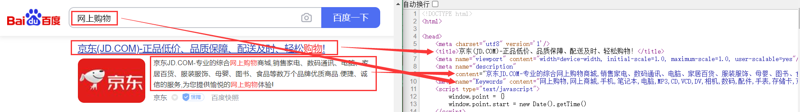
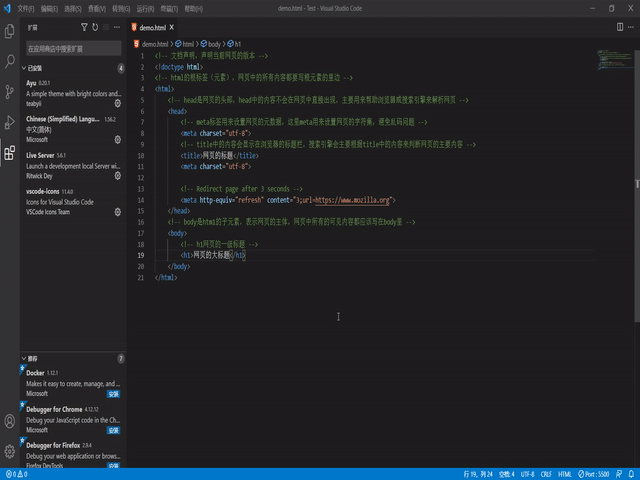
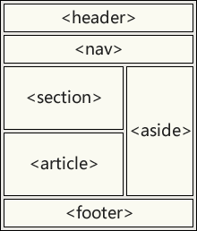

HTML（2-语法结构）
HTML5 基本结构
1 | <!-- 文档声明，声明当前网页的版本 --> |
doctype 文档声明
文档声明用来告诉浏览器当前网页的版本
1 | <!-- html5的文档声明 --> |
历史演变：
- HTML4.01 严格型：
<!DOCTYPE HTML PUBLIC "-//W3C//DTD HTML 4.01//EN"> - XHTML1.0：
<!DOCTYPE html PUBLIC "-//W3C//DTD XHTML 1.0 Strict//EN"> - HTML5 简化：
<!DOCTYPE html>
lang 语言种类
用来显示当前文档显示的语言。
1 | <html lang="zh-CN"> |
1 | <html lang="zh-Hans"> <!-- 简体中文 --> |
meta 标签
1 | <meta charset="utf8" version='1'/> |
1 | <!-- 移动端适配 --> |
以京东网站为例，右键单击，选择 查看网页源代码
meta 主要用于设置网页中的一些元数据，元数据并不是给用户看的
- charset：指定网页的字符集
- name：指定的数据的名称
- viewport：移动端适配
- keywords：表示网站的关键字，可以同时指定多个关键字，关键字间使用
,隔开 - description：表示网站的描述信息
- content：指定的数据的内容，会作为搜索结果的超链接上的文字显示

- http-equiv
如果设置了 http-equiv 属性，<meta> 元素就是一个 pragma 指令，提供的信息相当于一个类似名称的 HTTP 头所能提供的信息。
- content-security-policy：允许页面作者为当前页面定义一个内容策略。内容策略主要指定允许的服务器来源和脚本端点，这有助于防范跨站脚本攻击。
- content-type：声明文档的 MIME 类型和字符编码。如果指定，content 属性必须有 "
text/html; charset=utf-8" 的值。这相当于一个指定了 charset 属性的<meta>元素，并对文档中的位置有同样的限制。注意：只能在使用text/html的文档中使用，不能在使用XML MIME类型的文档中使用。 - default-style：设置默认的 CSS 样式表集的名称。
- x-ua-compatible： 如果指定，内容属性必须有 “
IE=edge” 的值。用户代理被要求忽略这个 pragma。 - refresh：该指令指定页面重新加载及重定向的方式
- 直到页面应该被重新加载的秒数——只有当 content 属性包含一个正整数时。
- 直到页面重定向到另一个页面的秒数——只有当内容属性包含一个正整数，后面跟着字符串 “
;url=”，以及一个有效的 URL。
1 | <meta charset="utf-8"> |
对 refresh 进行测试，发现过了 3 秒钟之后自动跳转到了指定的网站

内容修正
浏览器在解析网页时，会自动对网页中不符合规范的内容进行修正，比如：
- 标签写在了根元素的外部
<p>元素中嵌套了块元素- 根元素中出现了除
head和body以外的子元素
这个通过浏览器中的 查看网页源代码 并不能看到效果，但是使用 F12 进行 开发者调试 时是能够看到上述几种情况被修正的结果。
SEO 优化
SEO（Search Engine Optimization），即搜索引擎优化，是一种利用搜索引擎的规则提高网站在有关搜索引擎内自然排名的方式。
SEO 的目的是对网站进行深度优化，从而帮助网站获得免费流量，进而在搜索引擎上提升网站排名，提高网站知名度。
页面必须有三个标签用来进行 SEO 优化。
- title：是搜索引擎了解网页的入口和对网页主题归属的最佳判断点。
- description：description 作为网站的总体业务和主题概括
- keyword：keywords 是页面关键词，是搜索引擎的关注点之一。keywords 最好限制为 6～8 个关键词，关键词之间用英文逗号隔开，采用关键词 1, 关键词 2 的形式。
HTML5 新特性
- 语义化标签：
1 | <header>, <footer>, <nav>, <section>, <article>, <aside>, <main>, <figure>, <figcaption> |
- 多媒体支持：
1 | <video>, <audio>, <canvas>, <svg> |
- 表单增强：
-
新的输入类型：
email,url,number,range,date,color等 -
表单属性：
placeholder,required,autofocus,pattern
- API 支持：
- 本地存储：
localStorage,sessionStorage - 地理定位：Geolocation API
- 拖放：Drag and Drop API
- 离线应用：Application Cache
- 画布：Canvas API
常见标签
语义标签
| 标签 | 作用 | 描述 |
|---|---|---|
<h1> <h2> <h3> <h4> <h5> <h6> |
标题 | 一共有六级标题 从 h1~ h6 重要性递减，h1 最重要，h6 最不重要 h1 在网页中的重要性仅次于 title 标签 一般情况下一个页面中只会有一个 h1 一般情况下标题标签只会使用到 h1～ h3，h4～ h6 很少用 |
<hgroup> |
标题组 | 多层次的标题。它将一组 <h1>～ <h6> 元素分组 |
<p> |
段落 | 页面中的一个段落。由空行或第一行缩进将相邻的文本块分开 |
<blockquote> |
长引文 | 用缩进表示所包含文本。 可以用 cite 属性表示引文来源，用 <cite> 元素表示来源的文本表述 |
<q> |
短引文 | 用一个简短的内联引号包围文本。 大多数浏览器通过在文本周围加上引号来实现。 该元素用于不需要段落分隔的短引文； |
<br> |
换行 |
HTML5 提供的新语义元素有
| 标签 | 作用 | 描述 |
|---|---|---|
<header> |
页眉 | 介绍性的内容 |
<footer> |
页脚 | 通常包含有关作者的信息、版权或文件链接 |
<nav> |
导航链接 | 可以是当前文档内的，也可以是到其他文档的。常见例子是菜单、目录和索引 |
<main> |
文档主内容 | 中心主题直接相关或扩展的内容 |
<article> |
文章 | 自成一体，独立分发，可重复使用 |
<section> |
文档中的节 | 没有一个更具体的语义元素来代表 |
<aside> |
页面内容以外的内容 | 其内容与文档的主要内容只有间接的关系。经常以边栏或呼出框的形式出现 |
<mark> |
重要或强调的文本 | 为参考或记事目的而被标记或突出的文本，表明其相关性和重要性 |
<summary> |
<details> 标题 |
为 <details> 指定一个摘要、标题或图例。点击 <summary> 可以切换 <details> 打开和关闭 |
<details> |
用户能够查看或隐藏的额外细节 | 其中的信息只有被切换到 "打开 " 状态时才可见。必须使用 <summary> 提供一个摘要或标签 |
<figure> |
自包含内容 | 独立的内容，用 <figcaption>元素指定一个可选的标题。比如图示、图表、照片、代码清单等 |
<figcaption> |
<figure> 的标题 |
描述其父元素 |
<time> |
定义日期/时间 | 可能包括 datetime 属性，将日期翻译成机器可读的格式，以便获得更好的搜索引擎结果或自定义功能。如提醒 |
文本格式化标签
在网页中，有时候需要为文字设置粗体、斜体或下划线等效果，需要使用 HTML 中的文本格式化标签，使文字以特殊方式显示。
| 语义 | 标签 | 说明 |
|---|---|---|
| 加粗 | <strong></strong> 或 <b></b> |
更推荐 <strong>，语义更强烈 |
| 斜体 | <em></em> 或 <i></i> |
更推荐使用 <em>，语义更强烈 |
| 删除线 | <del></del> 或 <s><s/> |
更推荐使用 <del>，语义更强烈 |
| 下划线 | <ins></ins> 或 <u></u> |
更推荐使用 <ins>，语义更强烈 |
布局标签

| 标签 | 作用 |
|---|---|
| header | 表示网页的头部（页眉） |
| main | 表示网页的主体部分（一个页面中只会有一个 main） |
| footer | 表示网页的底部（页脚） |
| nav | 表示网页中的导航 |
| aside | 和主体相关的其他内容（侧边栏） |
| article | 表示一个独立的文章 |
| section | 表示一个独立的区块，上边的标签都不能表示时使用 section |
列表标签
1 | <ul>, <ol>, <li>, <dl>, <dt>, <dd> |
表格标签
1 | <table>, <tr>, <th>, <td>, <caption>, <thead>, <tbody>, <tfoot> |
表单标签
1 | <form>, <input>, <textarea>, <select>, <option>, <button>, <label>, <fieldset>, <legend> |
多媒体标签
1 | <img>, <audio>, <video>, <source>, <canvas>, <svg> |
超链接标签
1 | <a>, <link> |
列表
有序列表
使用 ol 标签来创建有序列表，使用 li 表示列表项
1 | <ol> |

无序列表
使用 ul 标签来创建无序列表，使用 li 表示列表项
注意：
- 各个列表项之间无需并列关系。
<ul></ul>中只能包含<li></li>，写入其他标签或文字是不允许的。- 无序列表带有自己的属性，可用 CSS 修改样式属性。
| 值 | 描述 |
|---|---|
| disc | 默认值。实心圆。 |
| circle | 空心圆。 |
| square | 实心方块。 |
1 | <ul> |

定义列表
使用 dl 标签来创建定义列表，使用 dt 表示定义的内容，使用 dd 来对内容进行解释说明
1 | <dl> |

超链接
超链接可以让我们从一个页面跳转到其他页面，或者是当前页面的其他的位置
使用 a 标签来定义超链接，href 属性指定跳转的目标路径，值可以是一个外部网站的地址，也可以写一个内部页面的地址
超链接是也是一个行内元素，在 a 标签中可以嵌套除它自身外的任何元素
外部地址
1 | <ul> |

内部地址
当我们需要跳转一个服务器内部的页面时，一般我们都会使用相对路径，会以 ./ 或 ../ 开头
./表示当前文件所在目录，可以省略不写../表示当前文件所在目录的上一级目录
1 | <a href="./test1.html">超链接1</a><br> |

新建页面
target 属性，用来指定超链接打开的位置，可选值：
- _self：在当前页面中打开超链接（默认值）
- _blank：在新建页面中打开超链接
1 | <a href="./test1.html">超链接1——默认</a><br> |

锚点跳转
- 使用
javascript:void(0);来作为href的属性，此时点击这个超链接什么也不会发生 - 直接将超链接的
href属性设置为#，作为超链接的路径的占位符使用，这样点击超链接以后页面不会发生跳转，而是转到当前页面的顶部的位置 - 跳转到页面的指定位置（锚点），只需将
href属性设置#目标元素的id属性值（唯一不重复）
1 | <p> 汉皇重色思倾国，御宇多年求不得。</p> |

图片
属性
图片标签用于向当前页面中引入一个外部图片
img 标签是一个自结束标签，这种元素属于替换元素（块和行内元素之间，具有两种元素的特点）
1 | <img src="图像url" /> |
| 属性 | 属性值 | 说明 |
|---|---|---|
src |
图片路径 | 必须属性 |
alt |
文本 | 替换文本，当图片不显示时显示文字 |
title |
文本 | 提示文本。鼠标放到图像上显示文字 |
width |
像素 | 图像宽度 |
height |
像素 | 图像高度 |
border |
像素 | 图像边框粗细 |
注意：
- 宽度和高度中如果只修改了一个，则另一个会等比例缩放
- 一般情况在 pc 端，不建议修改图片的大小，需要多大的图片就裁多大
- 但是在移动端，经常需要对图片进行缩放（大图缩小）
格式
- jpeg（jpg）
- 支持的颜色比较丰富
- 不支持透明效果
- 不支持动图
- 一般用来显示照片
- gif
- 支持的颜色比较单一
- 支持简单透明
- 支持动图
- png
- 支持的颜色丰富
- 支持复杂透明
- 不支持动图
- 专为网页而生
- webp
- 这种格式是谷歌新推出的专门用来表示网页中的图片的一种格式
- 具备其他图片格式的所有优点，而且文件还特别的小
- 缺点：兼容性不好
- base64
- 将图片使用 base64 编码，这样可以将图片转换为字符，通过字符的形式来引入图片
- 图片效果一样的，选文件小的
- 图片效果不一样的，选图片效果好的
- 尽可能的兼顾和平衡图片效果和文件大小
内联框架
内联框架 iframe，用于向当前页面中引入一个其他页面
| 属性 | 作用 | 示例 |
|---|---|---|
src |
设置嵌入页面的 URL | <iframe src="https://example.com"></iframe> |
width |
宽度（默认 300px） | <iframe width="500"></iframe> |
height |
高度（默认 150px） | <iframe height="300"></iframe> |
frameborder |
是否显示边框（0 无边框） |
<iframe frameborder="0"></iframe> |
scrolling |
滚动条（yes/no/auto） |
<iframe scrolling="no"></iframe> |
allowfullscreen |
允许全屏模式 | <iframe allowfullscreen></iframe> |
referrerpolicy |
控制引用信息 | <iframe referrerpolicy="no-referrer"></iframe> |
1 | <iframe src="https://www.qq.com" width="800" height="600" frameborder="0"></iframe> |

表格
同样在网页中我们也需要使用表格，我们通过 table 标签来创建一个表格
- 在
table中使用tr表示表格中的一行，有几个tr就有几行 - 在
tr中使用td表示一个单元格，有几个 td就有几个单元格
合并单元格
- rowspan ：纵向的合并单元格
- colspan ：横向的合并单元格
1 | <table border="1" width="50%" align=" center"> |
长表格
可以将一个表格分成三个部分：
- 头部
thead - 主体
tbody - 底部
tfoot
th 表示头部的单元格
1 | <table> |
样式
1 | <table> |
1 | table { |

表单
属性
| 属性 | 属性值 | 作用 |
|---|---|---|
| action | url 地址 | 指定接受并处理表单数据的服务器的 url 地址 |
| method | get/post | 设置表单数据的提交方式 |
| name | 名称 | 用于指定表单名称，区分同一个页面中的多个表单域 |
注意：
- 写表单元素之前需要有表单域将其包含。
- 表单域是 form 标签。
表单元素
input标签为单标签type属性设置不同属性值来指定不同控件类型
type 常用属性值
| 属性值 | 描述 |
|---|---|
| button | 定义可点击按钮 |
| checkox | 复选框 |
| file | 定义输入字段和“浏览”按钮，供文件上传 |
| hidden | 定义隐藏的输入字段 |
| image | 定义图像形式的提交按钮 |
| password | 定义密码字段。字符被掩码。 |
| radio | 定义单选按钮 |
| reset | 定义重置按钮，清除表单所有数据。 |
| submit | 定义提交按钮。重置按钮会清除表单所有数据。 |
| text | 定义输入字段。用户可输入文本，默认宽度为 20 个字符。 |
input 的其他属性
| 属性 | 属性值 | 描述 |
|---|---|---|
| name | 自定义 | 定义 input 元素名称 |
| value | 自定义 | 规定 input 元素的值 |
| checked | checked | 规定此 input 元素首次加载时应当被选中 |
| maxlength | 正整数 | 规定输入字段字符的最大长度 |
注意
- 对于
radio单选框，必须使input的name具有相同的属性值，才能实现多选一。 同理，复选框也要有相同的name值。 - 单选框和复选框可以设置
checked属性，页面打开默认选择按钮。 - 设置
type的值为submit，点击按钮后可以把表单域 form 里面的表单元素里面的值提交给后台。 - 设置
type="button"，普通按钮，后期结合 js 使用
其他
label 标签
<label> 标签为 input 元素定义标注。 <label> 标签用于绑定一个表单源深路，当点击 label 标签内的文本时，浏览器自动将焦点转到或者选择对应的表单元素上，提升用户体验。
1 | <label for="sex">男</label> |
<lable> 标签的 for 属性与相关元素的 id 属性相同。
select 下拉表单
select 标签设置多个选项让用户选择，节约页面空间。
1 | <select> |
注意
- select 中至少包含一对 option。
- 在 option 中定义属性
selected=selected，当前项即为默认选项。
textarea 文本域表单
场景：输入内容较多时
1 | <textarea rows="3" cols="20"> |
- cols：每行字符数
- rows：显示的行数
使用
- 文本框
1 | 文本框<input type="text" name="username"> |
- 密码框
1 | 密码框<input type="password" name="password"> |
- 提交按钮
1 | <input type="submit" value="注册"> |
- 单选框
像这种选择框，必须要措定一个 value 属性，value 属性最终会作为用户填写的值传递给服务器
1 | 单选框 |
- 多选框
1 | 多选框 |
- 下拉列表
1 | 下拉列表 |
- 按钮
1 | <!-- 提交按钮 --> |
input是自闭合标签，不需要</input>就能结束；button不是自闭合标签，跟一般标签一样是成对出现的button因为不是自闭合标签，所以使用起来更灵活，可以嵌套其他的标签
音视频
audio（音频）
audio 标签用来向页面中引入一个外部的音频文件
音视频文件引入时，默认情况下不允许用户自己控制播放停止
controls是否允许用户控制播放autoplay音频文件是否自动播放
- 如果设置了
autoplay，则音乐在打开页面时会自动播放 - 但是目前来讲大部分浏览器都不会自动对音乐进行播放
loop音乐是否循环播放
1 | <audio src="./source/audio.mp3" controls autoplay loop></audio> |
source
除了通过 src 属性来指定外部文件的路径以外，还可以通过 <source> 元素来指定文件的路径
1 | <audio controls autoplay loop> |
embed
IE8 下不支持 audio 元素，但是可以使用 <embed> 元素在文档中的指定位置嵌入外部内容。
这个内容是由外部应用程序或其他互动内容的来源提供的，如浏览器插件。
1 | <embed src="./source/audio.mp3"> |
video（视频）
1 | <video controls> |
其他
div 和 span
- div：块元素，没有任何的语义，就用来表示一个区块。目前来讲，div 还是主要的布局元素
- span：行内元素，没有任何的语义，一般用于在网页中选中文字
特点：
- div 标签用来布局，但是现在一行只能放一个 div，大盒子。
- span 标签用来布局，一行可以多个 span，小盒子。
块元素和行内元素
块元素（block element）
- 特点
- 独占一行，默认情况下会占满父容器的整个宽度。
- 可以包含块级元素和行内元素（但部分元素如
<p>不能包含块级元素）。 - 默认情况下有宽度、高度、内边距和外边距。
- 适用于布局结构，如段落、容器、列表等。
- 常见块级元素
- 结构性元素：
<div>、<section>、<article>、<header>、<footer>、<main>、<aside>、<nav> - 文本块：
<p>、<h1>~<h6>、<pre> - 列表：
<ul>、<ol>、<li>、<dl>、<dt>、<dd> - 表格：
<table>、<thead>、<tbody>、<tfoot>、<tr>、<td>、<th> - 其他：
<form>、<fieldset>、<legend>、<blockquote>
行内元素（inline element）
- 特点
- 不会独占一行，元素的宽度只取决于内容的大小。
- 只能包含文本或其他行内元素（不能直接包含块级元素）。
- 不能直接设置宽高（部分行内元素如
<img>例外）。 - 适用于文本内容的修饰、链接等。
- 常见行内元素
- 文本格式化：
<span>、<strong>、<em>、<b>、<i>、<u>、<small>、<mark>、<sub>、<sup> - 链接和交互：
<a>、<button>（可被 CSS 设置为块级） - 输入相关：
<label>、<input>、<textarea>、<select>、<option>、<br>（换行符）、<wbr>（可换行提示） - 媒体：
<img>、<svg>、<video>、<audio>（但默认video是块级） - 其他：
<code>、<kbd>、<samp>、<abbr>、<cite>
行内块元素
有些元素在默认情况下是行内元素，但可以通过 display: inline-block; 让其具备行内元素的排列特性，同时允许设置宽高。
- 特点
- 像行内元素一样不会独占一行。
- 但可以像块级元素一样设置
width和height。
- 常见行内块元素
- 默认即为
inline-block的元素：<img>、<input>、<button>、<select>、<textarea>
总结
| 分类 | 主要特点 | 例子 |
|---|---|---|
| 块级元素 | 独占一行，可包含块级和行内元素 | <div>, <p>, <h1>, <section>, <ul> |
| 行内元素 | 不换行，仅占自身内容的大小 | <span>, <a>, <b>, <i> |
| 行内块元素 | 行内显示，但可以设置宽高 | <img>, <input>, <button> |
字符实体
有些时候，在 HTML 中不能直接书写一些特殊符号，如：
- 多个连续的空格（在网页中编写的多个空格默认情况会自动被浏览器解析为一个空格）
- 比如字母两侧的大于小于号（可能会被认为是标签并解析）
如果我们需要在网页中书写这些特殊的符号，则需要使用 html 中的实体（转义字符）实体的语法：&实体的名字;，如：
| 实体名称 | 显示结果 | 描述 |
|---|---|---|
|
|
空格 |
> |
> | 大于号 |
< |
< | 小于号 |
& |
& | 与 |
© |
© | 版权 |
® |
® | 注册商标 |
™ |
™ | 商标 |
× |
× | 乘号 |
÷ |
÷ | 除号 |
¿ |
¿ | 倒问号 |